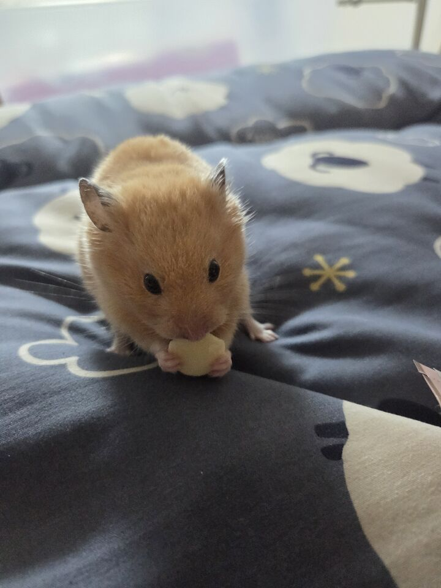
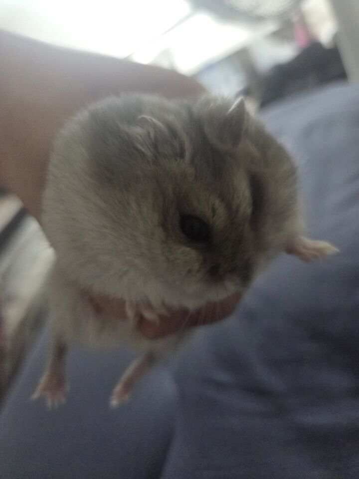
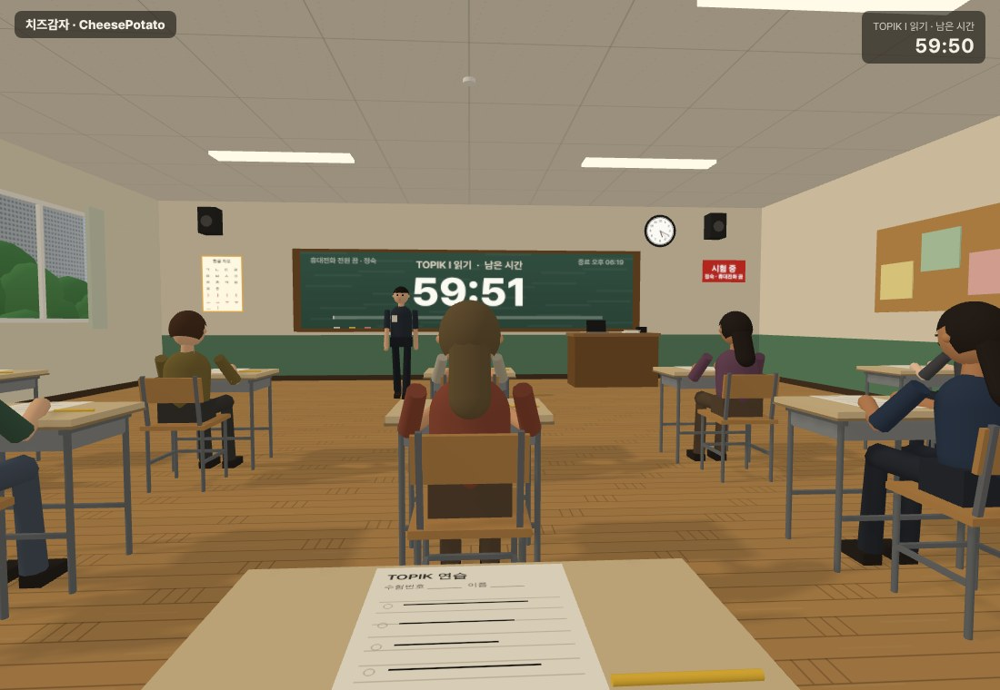

Korean, taught in the right order.
한국어를, 맞는 순서로 가르칩니다.
CheesePotato is a Korean-learning site made by a Korean teacher. Lessons run from Hangul to TOPIK level 6, and every practice question is written by us.
치즈감자는 한국어 선생님이 직접 만드는 한국어 학습 사이트입니다. 한글부터 TOPIK 6급까지 차례대로 배우고, 연습 문제는 모두 직접 씁니다.
레슨 401개 · 코스 97개
문법 290개
TOPIK 창작 문항
TOPIK 낱말
CheesePotato started with two hamsters: Cheese first, then Potato.
The name comes from our two hamsters. The first is Cheese, the golden one. The second is Potato, the grey one. This site started from their names.
치즈감자라는 이름은 우리 햄스터 두 마리에게서 왔어요. 첫째가 노란 치즈, 둘째가 회색 감자. 이 사이트는 두 아이의 이름에서 시작했습니다.

첫째, 노란 햄스터.

둘째, 회색 햄스터.
A Korean teacher, more than 1,700 one-to-one lessons, and the questions students kept asking.
CheesePotato is made by a Korean teacher who has taught learners from many countries, one to one. The lessons, the grammar notes and the TOPIK practice all come from what students actually ask in class.
여러 나라 학습자와 1:1 수업을 1,700회 넘게 하면서, 학생들이 실제로 묻는 것을 모아 레슨 · 문법 · TOPIK 연습으로 만들었습니다.
The site is run by Everykoreans (에브리코리안즈), an independent business in Korea. We also publish the PDF workbooks.
사이트는 한국의 개인사업자 에브리코리안즈가 운영하고, PDF 워크북도 직접 냅니다.
One place to start, practise and check your Korean.
ALessons in order
A 3-minute level test finds your starting point. Then follow a path: general Korean from Hangul to advanced, or TOPIK preparation for levels 1 to 6. 3분 레벨테스트로 시작할 자리를 찾고, 한글부터 고급까지(일반) 또는 TOPIK 1~6급 길을 따라갑니다.BTOPIK practice
Mock tests, practice by question type for reading, listening and writing, and EPS-TOPIK. 모의고사, 읽기 · 듣기 · 쓰기 유형별 연습, EPS-TOPIK.CReference
A Korean dictionary with examples, 290 grammar points, and TOPIK word lists you can download. 예문이 있는 국어사전, 문법 290개, 내려받을 수 있는 TOPIK 낱말 목록.DIn your language
The screen (menus, buttons, tips) is available in 12 languages: Korean, English, Vietnamese, Japanese, Chinese, Indonesian, Nepali, Burmese, Russian, Mongolian, Portuguese and Uzbek. Some newer screens may still show English. Word meanings come in English plus Japanese, Chinese, Vietnamese, Russian, Spanish, French, Arabic, Mongolian and Indonesian. Lessons, exercises and reading passages are in Korean and are not translated. 화면(메뉴 · 단추 · 안내)은 한국어 · English · Tiếng Việt · 日本語 · 中文 · Bahasa Indonesia · नेपाली · မြန်မာ · Русский · Монгол · Português · Oʻzbekcha 12개 언어로 볼 수 있습니다(새로 생긴 화면은 일부가 영어로 보일 수 있어요). 낱말 뜻은 영어 + 일본어 · 중국어 · 베트남어 · 러시아어 · 스페인어 · 프랑스어 · 아랍어 · 몽골어 · 인도네시아어. 레슨 · 문제 · 읽기 지문은 한국어이고 번역하지 않습니다.EOn Android
An Android app on Google Play, with the same lessons. 구글 플레이의 안드로이드 앱에서 같은 레슨을 볼 수 있습니다.

Five promises we keep.
1Original questions, not past papers
Every TOPIK and EPS-TOPIK question is written for this site in the same format as the real test. We never copy official exam questions. TOPIK · EPS-TOPIK 문항은 모두 실제 시험 형식에 맞춰 새로 썼습니다. 기출 문제를 옮기지 않습니다.2In the right order
From Hangul to TOPIK level 6, each step builds on the one before. 한글부터 TOPIK 6급까지, 앞 걸음 위에 다음 걸음이 쌓이게 놓았습니다.3AI where it helps
AI scores your TOPIK writing and gives pronunciation feedback. What you send to the AI is not stored on our servers. AI 는 쓰기 채점과 발음 진단에만 씁니다. AI 에 보낸 것은 서버에 저장하지 않습니다.4Free stays free
Most of the site is free. Anything marked free will not be moved behind Pro later. 대부분이 무료이고, 무료로 적힌 것은 나중에 Pro 로 옮기지 않습니다.5No ads, no selling your data
See the privacy policy. 광고도, 정보 판매도 없습니다. 개인정보처리방침.
Books you write in, with a free sample and answer pages.
Vocabulary, particles, TOPIK II reading and writing, idioms. Sold on this site and on Yes24 in Korea.
직접 쓰면서 푸는 워크북입니다. 단어장, 조사, TOPIK II 읽기 · 쓰기, 관용 표현. 이 사이트와 예스24에서 판매합니다.
Set homework and review for your class, for free.
Teachers can run homework and review with the class tools. Students in a class get Pro features at no cost. Lessons and payments stay between you and your students.
선생님은 반 도구로 숙제와 복습을 낼 수 있고, 반 학생은 Pro 기능을 무료로 씁니다. 수업과 결제는 선생님과 학생 사이에 그대로 둡니다.
CheesePotato is an independent study site. It is not the official TOPIK and is not connected to its organisers, and TOPIK is a registered trademark of its owner. Our mock tests are practice questions. The 3D exam room keeps time and sets the mood, it is not the official exam screen.
치즈감자는 독립적인 학습 사이트이며 공식 TOPIK이나 주관 기관과 관련이 없습니다. TOPIK은 해당 권리자의 등록상표입니다. 모의고사는 연습 문항이고, 3D 시험장은 시간과 분위기를 연습하는 도구로 공식 시험 화면이 아닙니다.
Find where to start. It takes three minutes.
내 자리를 찾는 데 3분이면 됩니다.
A question, a mistake you found, or a school that wants to use the class tools: email cheesepotato@everykoreans.com or send a message on Instagram.
궁금한 점, 발견한 오류, 반 도구를 쓰고 싶은 학교는 이메일이나 인스타그램으로 알려 주세요.